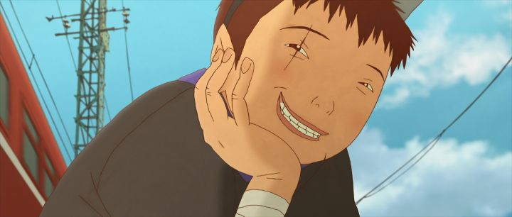

Disclaimer: This is a review of the 2006 animated film "Tekkonkinkreet," based on the manga named "Tekkonkinkreet - Black & White" by Taiyo Matsumoto.When I first really started getting into anime in the late 2000's, I experimented by blind-buying anime feature films on DVD. These were original one-shots, could be watched in an afternoon, and as it turned out, there were some excellent films to expand my mind with at the time. As such, "Tekkonkinkreet" was one of my earlier DVD's. Visually, and in terms of story, it's utterly bizarre and magnificant. I was thoroughly impressed. Later, I thought it might have been a bit too much, art for art's sake in hindsight. Years later, I rewatched it, and no, my first impression was right. It's an incredible art film. But it is an art film, and might leave some viewers bewildered. It was animated by Studio 4C, one of my first exposures to what I'd know to be one of the most ambitious anime studios in Japan, and this movie fits all of their tendancies, for better and worse. And it was directed by Michael Arias, an American, one of the very few Westerners that established themsevles in Japan to direct anime (as well as some live-action Japanese movies); what would his sensibilities be like? And from the posters, you can tell right away that "Tekkonkinkreet" doesn't look like any other anime. The visual design is a mix of the original manga, "Mind Game," and 4C's short from "The Animatrix." It's different, it's original, but it's weird. So's the story. Set in a fictional Japanese slum called "Treasure Town," it features Black and White, two snot-nosed brothers and orphans, street urchins nicknamed "the Cats" by the locals. As far as they're concerned, they run this town, "keeping the peace" from bad guys, however the kids might define them. This means rival teenagers trying to "muscle" their way in, but also real thugs, multiple adult Yakuza gangs ("the Rats" and "the Snake" among others), and the police. And when children try to play hero unsupervised, they sometimes use real pipes and crowbars, and commit real violence. Indeed, Black and White are no strangers to violence, even giving an evil, tooth grin to successfully intimidate their enemies. White is the younger of the two, and from living in the streets without schooling for so long, he's simple-minded, dependent, and often lost in daydreams and riddles (possibly meant to be autistic, but this is never spelled out). He helps in his own ways, but largely needs Black, despite being more than 10 years old. Black accepts his role as the older sibling and protector (not an uncommon story dynamic, as seen in the American novel "Of Mice and Men"), taking things seriously, and typically being the one to commit violence, for the sake of "his town" and his brother. As the film develops, it becomes clear that Black needs White as much as the reverse, in order to ground Black away from his darker mentality. Both dream of saving enough money (stolen through pickpocketing) to get on a plane and buy a house somewhere on a secluded island, somewhere peaceful, together. But as their threats grow, their quest for a place to call home becomes a fight to survive.  The story is primarily about the two kids, but is moreso about the city itself over the course of a year, spending a lot of time on the varying adults, each thinking that Treasure Town is "their city" to do with as they please, and to fight for as they like. It's a refreshing break to hear their mature outlooks in-between the innocent musings on life by White to his brother. There are also multiple action scenes, usually chase scenes, that seem to blend fantasy and reality: Black and White can each jump from several stories without a scratch, like cat-like-Spidermen running across town (in some scenes, White appears to even float down, as if the laws of gravity simply don't apply). It might annoy some viewers, but it's a beautiful use of magical realism that is so well-suited to animation. These cross-woven character threads play out in ways that are not unexpected, and takes its time over its two-hour runtime (some viewers might get bored before it's over). But some of the scenes are also the most memorable I've seen in film. The movie feels mature and written like a contender for an Oscar for best feature. As always, if this had been live-action, it might have at least gotten a nomination. For the open-minded, "Tekkonkinkreet" would be a critics' favorite.Visually, "Tekkonkinkreet" at least has a consistent design-style for its characters, but I have to admit it is simply ugly. Everyone has beady eyes and simply-drawn toothy mouths in their round faces, conveying Asian faces better than traditional anime does, but it's also distractingly ugly. It's a shame since the backgrounds are so beautifully detailed, with plenty of shots focusing on the concrete cracks and graffiti and trash. The movie successfully uses 3D environments with 2D art for some incredible dynamic camera shots, a great work of cinematic animation that could be described as nothing less than art. The music feels magical, haunting and wonderous, doing a lot to set the mood. The English dub doesn't make a great first impression, but gets better when it focuses on the adults opposed to the children characters. A brief word on the Sony Pictures American Bluray, which I last saw this on: it felt as though there was some artifacting in the colors, and I don't know if that's a disc issue, or if the film master used deliberately dirty coloring.Critics will find a lot to like in "Tekkonkinkreet" if they are willing to not over-analyze some details, and I think most viewers will be surprised by how impressed they are. There's also a lot of opportunity to claim the movie is overrated. But when I rewatch it, the movie speaks for itself, an indie-styled masterpiece about mental health and two brothers lost in a concrete jungle.
- "Ani" More reviews can be found at : https://2danicritic.github.io/ Previous review: review_Teen_Titans_Go_(To_The_Movies) Next review: review_Terror_in_Resonance